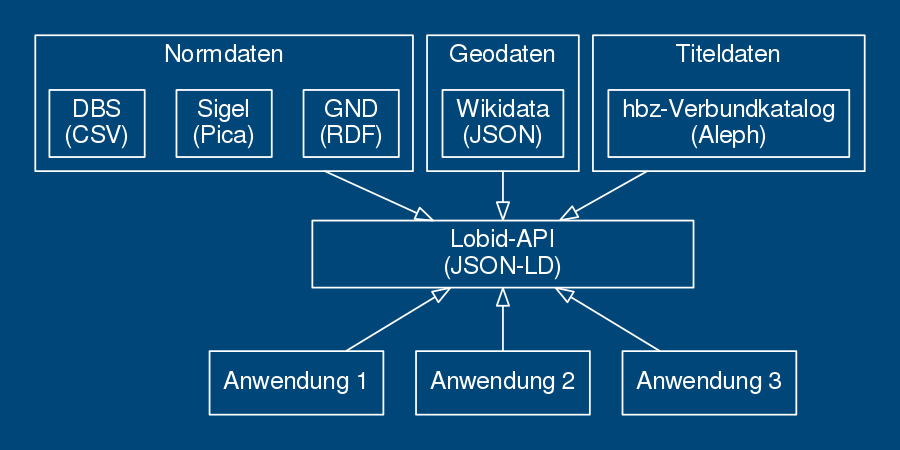
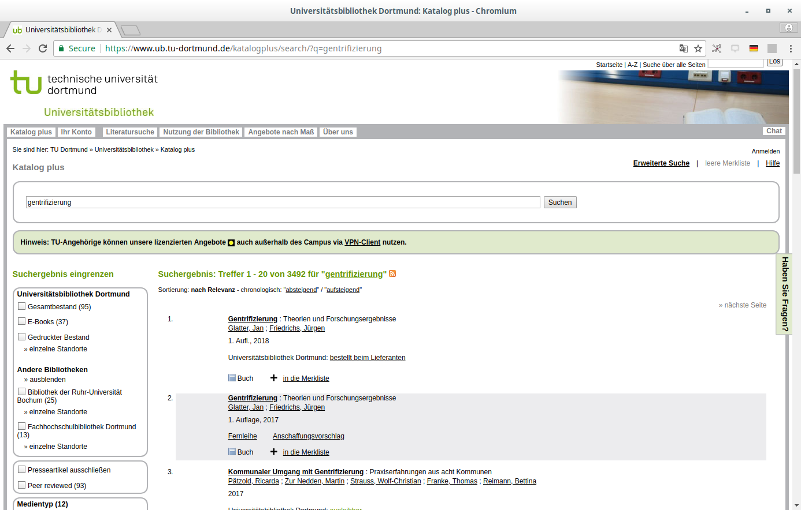

lobid –
offene, webbasierte Infrastruktur für zentrale bibliothekarische Daten
Adrian Pohl /
@acka47
Linked
Open Data, Hochschulbibliothekszentrum NRW (hbz)

Berlin, 2018-06-14
Diese Präsentation:
http://slides.lobid.org/bibtag18/

Agenda
- lobid
- lobid-gnd
- Oberfläche
- Daten
- API
- Anwendungsbeispiele
1. lobid
Linking open (bibliographic) data
Das hbz entwickelt seit 2009 Software im Bereich Linked Open Data
Leitlinien:
1. Publikation offen lizenzierter Daten zur freien Nutzung
2. Nutzung domänenübergreifender Web-Standards
3. Bereitstellung von Web-APIs plus Endnutzeroberflächen
lobid-Dienste
Mittlerweile sind alle Dienste in der zweiten Version
lobid-resources: Daten des hbz-Verbundkatalogs
lobid-organisations: Daten des deutschsprachigen Sigelverzeichnisses und DBS-Stammdaten
lobid-gnd: Gemeinsame Normdatei
Datenquellen und -formate
Einheitlicher Zugriff bei unterschiedlichen Quellformaten und -systemen
lobid-resources

Dokumentation der lobid-resources-API: https://lobid.org/resources/api
lobid-organisations

Dokumentation der lobid-organisations-API: https://lobid.org/organisations/api
lobid-gnd

Dokumentation der lobid-gnd-API (im Aufbau): https://lobid.org/gnd/api
Schauen wir uns das doch mal genauer an
2. lobid-gnd
(Für Details siehe auch diesen aktuellen Blogbeitrag.)
a. Die Oberfläche
Auto Suggest

Ergebnisliste

Einzeltreffer

Beziehungsgraph

b. Die Daten

JSON


Datenherkunft & -generierung
Tägl. Bezug der GND-RDF-Daten von der DNB via OAI-PMH
Konversion nach JSON-LD mittels @context, Framing etc.
Homogenisierung von Typen und Label-Properties
Labels für verlinkte Ressourcen ergänzen
Anreicherung mit EntityFacts-Links und -Bildern
c. Web-API

Abfrage-Möglichkeiten
JSON-LD-Daten in Elasticsearch-Index
Elasticsearch bzw. Lucene Suchsyntax
Für Einzeltreffer andere RDF-Serialisierungen per Content Negotiation
Beispiel-Abfragen
Personen, die während der NS-Zeit in Köln geboren wurden
Einträge, die einen DDB-Link aber keinen Wikidata-Link haben
Was fehlt noch in lobid-gnd?
Dokumentation durch Annotation eines Beispiels (wie hier)
OpenRefine Reconciliation Endpoint (#65)
Bulk Downloads (#91)
Weiterleitungen von GND-URIs nach Zusammenführungen (#117)
Usability Tests
Nutzer*innen-Feedback: Was vermissen Sie?
3. Anwendungs-
beispiele
GND-Lookup im Erfassungsformular

Basiert auf Auto-Suggest-Funktion der lobid-gnd-API
NWBib

NWBib
Basiert vollständig auf der lobid-API
Nutzt das NWBib-Subset von lobid-resources
Informationen zu besitzenden Bibliotheken von lobid-organisations
Themenvorschläge auf Basis von lobid-gnd
NWBib-Suchergebnisliste

Anfrage gegen das NWBib-Subset in lobid-resources

Informationen zu besitzenden Bibliotheken (Name, URL, Standort) werden aus lobid-organisations geladen

Suche in den Verweisungsformen der GND und Anzeige von bis zu drei Vorschlägen, die am meisten Treffer in der NWBib bringen
Reconciliation mit OpenRefine

Abfrage einer ISIL für eine Liste von Bibliotheken
Discovery-Index der UB Dortmund
Daten zu den Beständen der UB & einiger umliegender Bibliotheken werden täglich von lobid geholt, transformiert und in den Index geladen